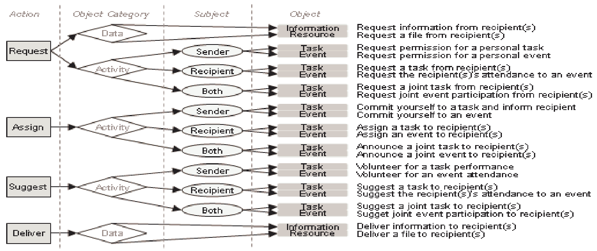

- Generated by
 1.9.1
1.9.1
|
ACME
0.0.1
ACME: Automated Collection and Manipulation of Email
|
Create order where chaos reigns, your inbox ;)
This readme is still in revision as of June 14, 2021... you've been warned
This project aims to automate away the tediouse and technical details involved with:
I also aim to present this project as a sort of open-topped toolkit. Meaning it should allow users to grab only the sub-modules they need in order do any one of the above listed tasks.
Ultimately, code in this repository is meant to reduce the number of steps the user (you) need to toake before you can get to the more interesting work of creating a custom tool for automated message classification, or simply conducting a personal analysis on how you communicate with friends and colleagues.
This project has become a sort of hobby project for me, so I will continue to hack at it until I feel it has matured to the point that:
The default configuration of this application is to use python's builtin imaplib package to access email. This means that in order for you to use this application on your own email account, you need to configure it to allow application access other than your normal browser access.
For the time being, I've only ever done this with a gmail account, though it should theoretically be portable accross all imap email hosts that support the imap protocol RFC822 (This should include most all modern email servers).
As taken from google's help center, found here: https://support.google.com/accounts/answer/185833
Tip: App Passwords aren’t recommended and are unnecessary in most cases. To help keep your account secure, use "Sign in with Google" to connect apps to your Google Account.
An App Password is a 16-digit passcode that gives a less secure app or device permission to access your Google Account. App Passwords can only be used with accounts that have 2-Step Verification turned on.
Tip: iPhones and iPads with iOS 11 or up don’t require App Passwords. Instead use “Sign in with Google.”
If the app doesn’t offer “Sign in with Google,” you can either:
If you use 2-Step-Verification and get a "password incorrect" error when you sign in, you can try to use an App Password.
Go to your Google Account.
Tip: Most of the time, you’ll only have to enter an App Password once per app or device, so don’t worry about memorizing it.
ToDo: Experiment with non-gmail accounts and update this portion of the guide once a proper procedure is confirmed.
We are using the python builtin package sqlite3 to manage our databases where we cache persistent message and associated analysis data to disk.
We are also maintaining 3 seperate databases over the course of the applications execution. We chose to do this in order to maintain a higher level of encapsulation between the major execution steps of the application. Thus ensuring the end user can easily treat this application as an adaptable toolkit that they can customize to their unique needs as they explore the data potentials of their email inbox.
Miniconda console tool for minimalistic footprint virtual environment manager.git clone https://github.com/RyanCPeters/ACME.gitcd ACMEconda env create -f ./environment.ymlconda activate acme_envconda env exportconda env export --from-historyenvironment.yml file required.acme_env virtual environment.ACME folder, which is the root of the project,setup.py file should also be in the ACME folder.pip to execute the setup.py file which creates a terminal entry-point for the application.python -m pip install -e .
collect_email to get the default implementation of the downlaoder.*/EmailClassification/cache_files/ folder,collect_email /path/to/your/desired/cache/pointIf you would like to manually inspect the entire list of entry points the setup.py file created, see the keyword entry_points at the bottom of the setup.py file.
The application's execution flow consists of three phases:
sql3_email.db sql3_message_body.db sql3_email.dbThe following excerpts were extracted from Classifying Action Items for Semantic Email
...This model is based on aspects of the Speech Act Theory (Searle, 1969), which states that every utterance implies an action by the speaker with varying effects on both the speaker and the hearer. When applied to electronic conversations, the sender and the recipient perform the roles of the speaker/hearer whereas textual phrases function as utterances. Action items in the model consist of three parameters:
- Action – what is being performed e.g. a request, a notification or an assignment
- Object – the object of the action e.g. a request for a meeting
- Subject – the subject/agent of the object if applicable e.g. who will/would attend the meeting
Actions consist of Request – an action requiring a reply from the recipient (e.g. a question); Assign – an action requiring an activity but no reply (e.g. an order or a commitment); Suggest – an action involving an optional activity; and Deliver – the action of delivering data. Objects are categorised into Activities (Task and Event) and Data (Information and Resource). The subject parameter is only applicable to activities (being the task performer(s) or the event participant(s) – i.e. Sender, Recipient, Both). Thus, a request for permission to attend an event is represented as a (Request, Event, Sender), an order to perform a joint task as an (Assign, Task, Both), and a request for information can be represented as a (Request, Information, Ø). The basic 22 combinations of these parameters (i.e. the email action items) together with a brief description are shown in Fig. 1.
 <figcaption>Figure 1: The 22 action item instances for the classification task, with a short description</figcaption>